Impacto de la Pandemia en el NEM
Integrantes:
Carla Espinoza - Gaspar Galaz
Renato Reyes - Constanza Alarcón
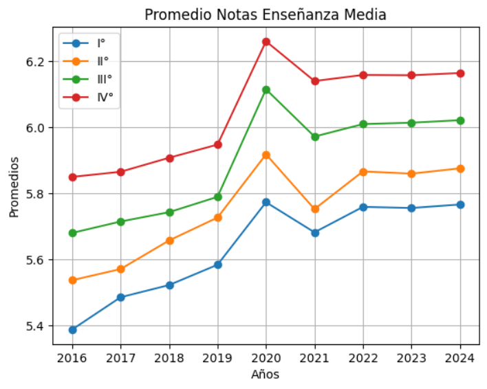
Promedios por grado de la Enseñanza Media
La pregunta para este gráfico fué: ¿Que tanto cambió los resultados de los promedios antes, durante y post pandemia?
Este gráfico muestra la evolución del rendimiento académico durante los años.
Se observa en todos los grados una tendencia eascendente con un pick notorio en 2020.
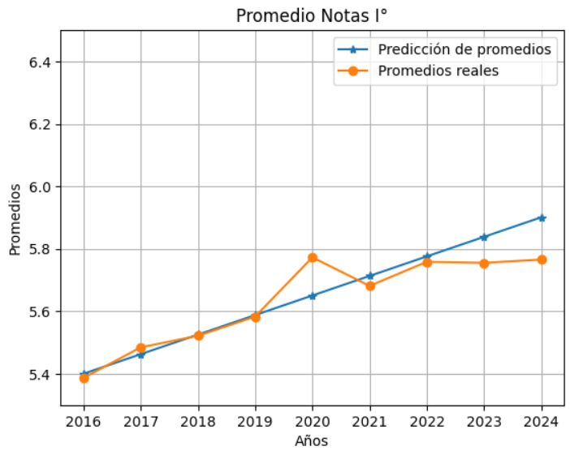
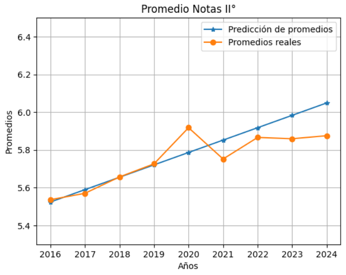
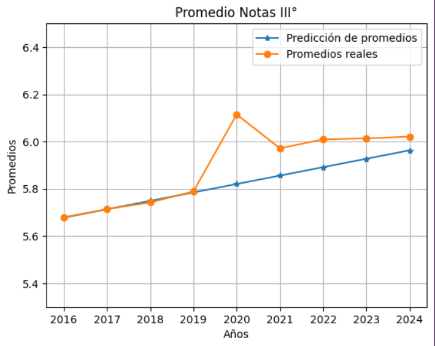
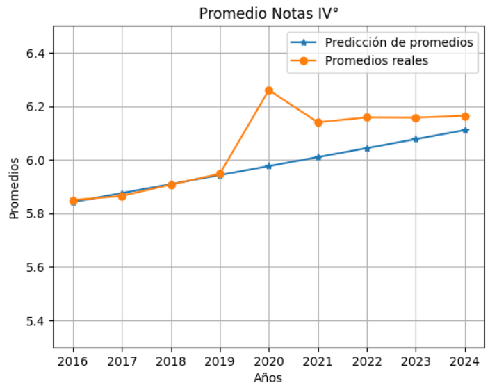
Comparación por Establecimiento
Con estos 4 graficos quisimos responder a la pregunta:
¿Qué hubiera pasado con los promedios sin la Pandemia?
Aquí se comparan, para cada grado, la proyección de los promedios sin la pandemia y los datos reales. En ambos casos se observa una
tendencia ascendente, sin embargo, gracias a la pandemia, se produjo un cambio importante en 2020.
Podemos concluir que
aunque los datos reales en 2020 fueron más altos que la proyección, después de 2020, los datos reales de I° Y II° medio
fueron más bajos que su proyección, mientras que los de III° y IV° medio continuaron manteniendo una diferencia.
"Diferencia en 2020 "
Como en los graficos anteriores no se calculó la diferencia que tanto estamos buscando, en este gráfico se calcula para cada grado, su diferencia con la proyección.
Concluimos que la diferencia de III° y IV° medio fueron casi el doble que los de I° y II° medio.
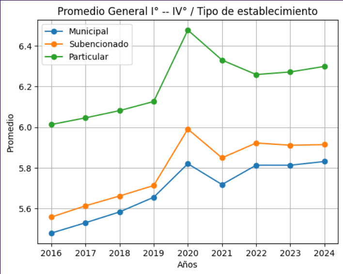
Comparación por Establecimiento
Queríamos investigar si existío una brecha en los promedios entre los distintos tipos de establecimientos educacionales.
Observamos que, incluso antes de la pandemia ya existia una gran brecha entre los establecimientos particulares con los subencionados o municipales y que debido a la pandemia esta brecha creció aun más.
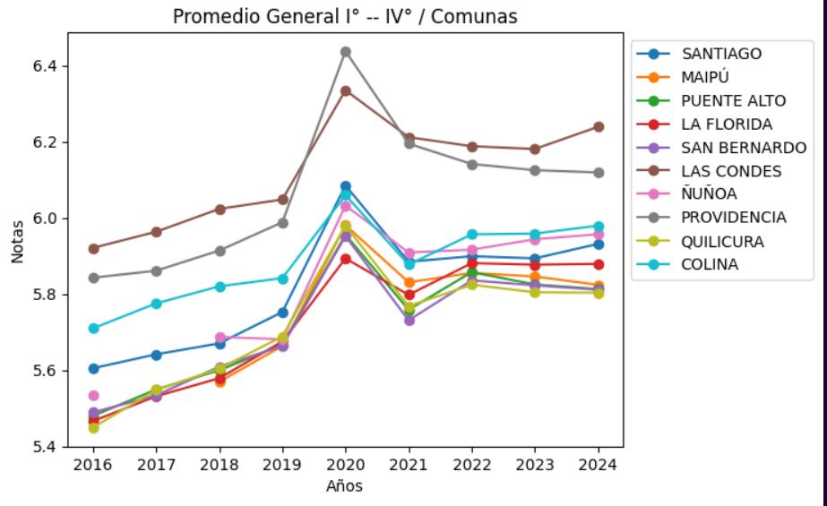
Comparación por Comuna
Buscamos determinar la comuna con la mayor y la menor alza en 2020
Notamos que la comuna con la mayor alza en sus promedios fue la comuna de Providencia y la de la menor fue La Florida
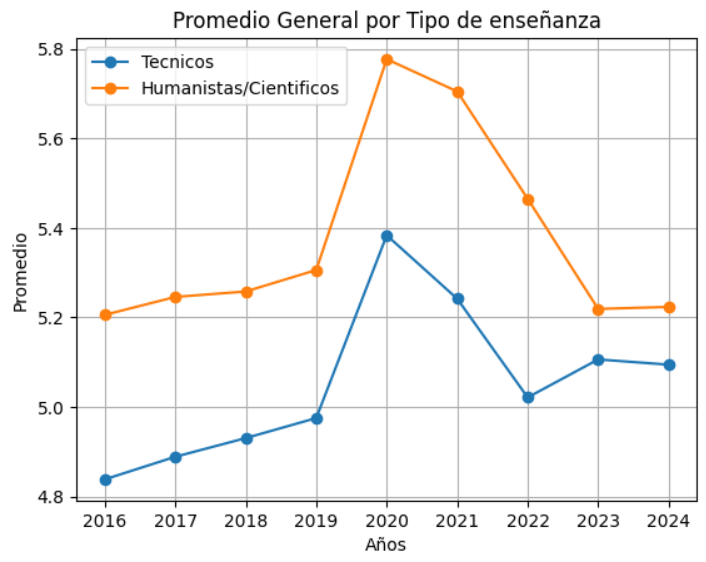
Comparación por tipo de Establecimiento Educacional
El objetivo de este gráfico fue contestar a:
¿Qué tanta fué la diferencia en 2020 de los promedios entre los Técnicos y los Científicos Humanistas?
Se aprecia que en 2020, ambos tipos de establecimiento tienen una diferencia de casi 4 décimas, pero que esta, ya se mantenía de antes, cosa que cambió después de 2022, curiosamente fué el primer año de regreso de la pandemia y es cuando la Prueba de Acceso a la Educación Superior (PAES) modificó su escala pasando de 850 a 1000 pts.
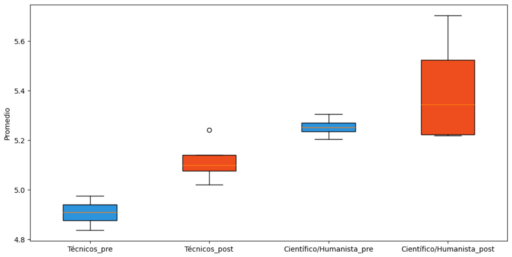
Comparación pre y post Pandemia según tipo de Establecimiento Educacional
Nuestro propósito al realizar este análisis fue comparar la distribución de los promedios pre y post pandemia según el tipo de establecimiento.
Esto demuestra que los establecimientos Científicos Humanistas aumentaron en la dispersión de sus promedios y que los establecimientos Técnicos no aumentaron la dispersión notoriamente pero sí, hubo un crecimiento en conjunto de los promedios.
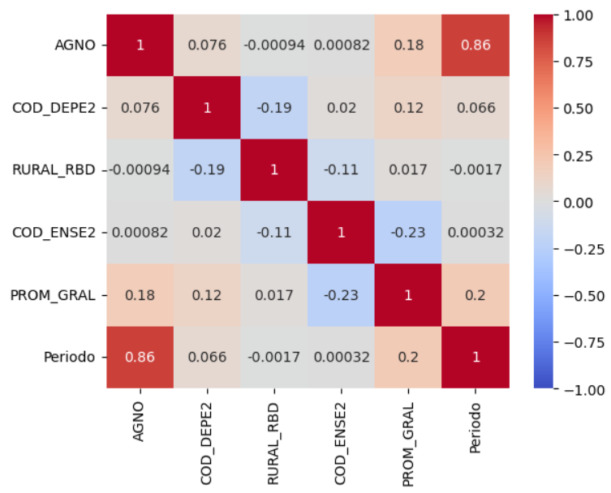
Correlación entre años, periodos de pre- o post-pandemia, dependencia, ruralidad y método de enseñanza o promedio general
Buscamos responder si exite una correlación en la alza del rendimiento de los promedios de la enseñanza mendia y los años, periodos de pre- o post-pandemia, dependencia, ruralidad.
No se presenta una gran correlación entre los datos de años, periodos de pre- o post-pandemia, su dependencia, ruralidad, método de enseñanza o promedio general, esto demostrando que el cambio de notas no se generó por estas características principalmente, lo que aprueba más la teoría de que la pandemia afectó el NEM (esto también al tener la mayor correlación presente en el gráfico sin contar año/periodo).
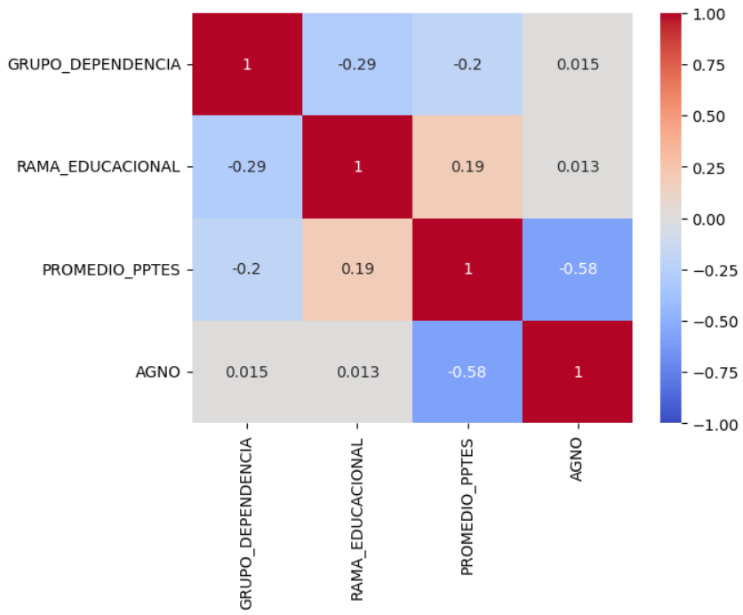
Correlación entre los puntajes, la rama educacional, grupos de dependencia o años de los estudiantes
se puede observar cómo las correlaciones entre los puntajes, la rama educacional, grupos de dependencia o años de los estudiantes no muestran una gran relación entre ellos, siendo la que existe entre año y promedio de puntajes con mayor relevancia en el gráfico presente, demostrando nuevamente cómo estos valores se relacionan debido a la pandemia de manera inversa, comprobando que aunque hayan aumentado los puntajes NEM, los resultados de las pruebas de admisión no reflejan estos aumentos.
Motivación de este Proyecto
La investigación de nuestro grupo se debe a nuestro gran interés
en el impacto de la Pandemia sobre el NEM, debido a una notoria
alza de los promedios de la enseñanza media en el periodo
de 2020 a 2021. Nos interesó que frente a una gran emergencia
sanitaria los promedios de los estudiantes seguían subiendo,
produciendo así una inflación en las notas.
Es este escenario el que produce nuestra pregunta principal y
central de nuestro proyecto: ¿Esta alza es consecuencia
directa de la metodología utilizada para la adaptación en la
enseñanza o es una tendencia que ya estaba implementada de antes?
También nos dio curiosidad si esta alza es igual dependiendo del tipo
de Establecimiento Educacional (municipal, subvencionado y privado),
si es Técnico o Científico Humanista o si influye la comuna en donde
se estudia. Podemos estudiar si un buen promedio es reflejo de un buen rendimiento
y lo probaremos con la discrepancia notable entre los resultados del
rendimiento del NEM y los de la PAES, lo que avivó nuestra
atención a los efectos que ocasionó la Pandemia en el desempeño académico.